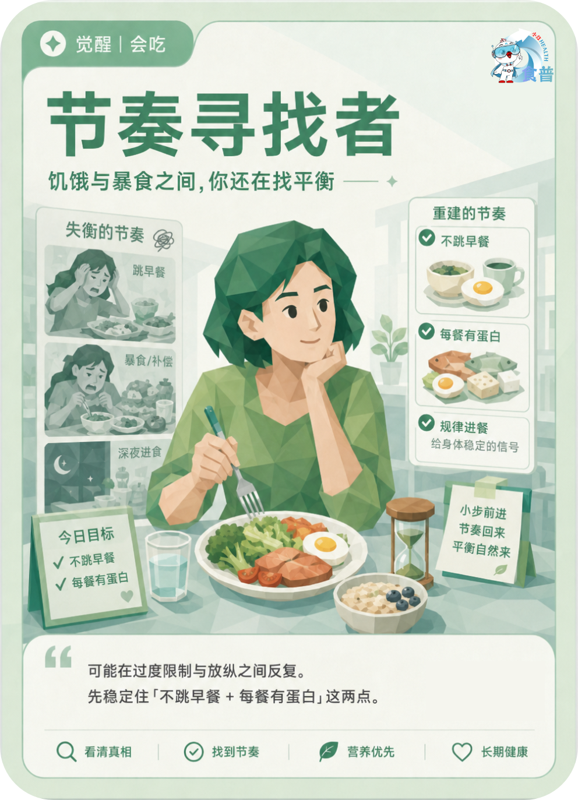

体重管理人群
觉醒
会吃
W14
节奏寻找者
饥饿与暴食之间,你还在找平衡
可能在过度限制与放纵之间反复。先稳定住「不跳早餐 + 每餐有蛋白」这两点。
手机端可点击“打开原图”后长按图片保存；也可以直接长按上方图卡保存。

饥饿与暴食之间,你还在找平衡
可能在过度限制与放纵之间反复。先稳定住「不跳早餐 + 每餐有蛋白」这两点。
手机端可点击“打开原图”后长按图片保存；也可以直接长按上方图卡保存。